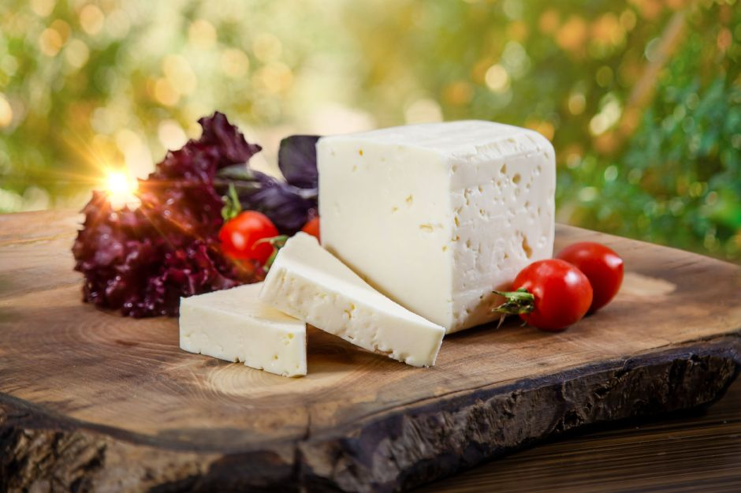
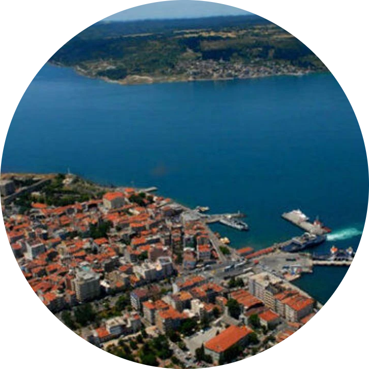

Yöresel Tatlar Listesi (Tıkla ve İncele!)
{{ food.name }}
{{ food.highlight }} Çanakkale Geleneği{{ selectedInspectFood.name }}
{{ selectedInspectFood.description }}
-
❧
{{ t }}
Kültür ve Türkçe Kelime Öğrenme Panosu
Genel dil bilgini ve coğrafi kültürünü geliştirecek kelimelerin Türkçe tanımlarını oku!
{{ vocab.desc }}
Aşçıbaşı Atölyesi: Çanakkale Lezzetleri Pişiyor!
Geleneksel tarifleri adım adım takip et, malzemeleri doğru sırada ekle ve usta aşçı ol!
{{ recipe.name }}
{{ recipe.description }}
 {{ cookingRecipe.name }}
{{ cookingRecipe.name }}
{{ step.instruction }}
Eline Sağlık, Harika Kokuyor!
Tebrikler kahraman! {{ cookingRecipe.name }} yemeğini usulüne uygun pişirdin!
Eylemler (Tarife göre tıkla):
Ezine Peyniri'nin Gururlu Başarı Yolculuğu

Dedektif Ol ve Tescili Al!
Sütün sağılmasından, AB mührünü alana kadar süreci yönet!
Adım 1: Kaz Dağları'nda Taze Süt Toplama
Süt tankını doldurmak için butona tıkla.
Adım 2: Doğal Maya ve Mayalama
Şirden mayası eklenen sütü karıştır.
Adım 3: Mahzende Olgunlaşma
Ezine peyniri 11 ay dinlenmelidir. Bekletelim!
Peynir Olgunlaştı! 🥳
AB tescil komitesi onayladı. İlk AB Coğrafi İşaret Mührünü basmaya hak kazandın!

🏆'">MUHTEŞEM BAŞARI!
Ezine Peyniri artık tescilli bir dünya markası!
Sıvı Altın Değirmeni: Sıfat ve Zarf Oyunu
Zeytin ezme taşını döndürmek için gelen kelimeyi "Sıfat" veya "Zarf" olarak doğru ayır ve sızma zeytinyağını süz!
{{ millWords[millIndex].text }}
Yağlar Süzüldü!
Türkçemizi de sızma yağ gibi berrak kullandın!
Lezzet Dedektifi Bilgi Yarışması
{{ quizQuestions[currentQuizIndex].question }}
💡 Şefin Çözümü
{{ quizQuestions[currentQuizIndex].explanation }}
Günün Türkçe Kelimesi
{{ quizQuestions[currentQuizIndex].vocabularyFocus.word }}: {{ quizQuestions[currentQuizIndex].vocabularyFocus.meaning }}